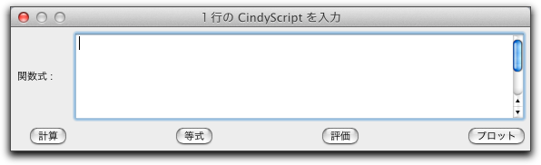
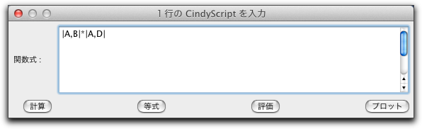
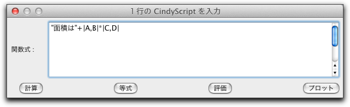
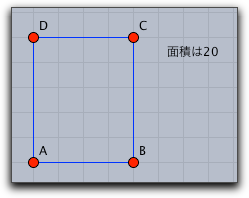

関数を定義する

関数モードに入り、ウィンドウのどこかをクリックすると次のようなウィンドウが現れます。
 |
| 関数を入力するダイアログ |
ここで CindyScript のコードを１行入力できます。ボタンは、この行をどのように処理するかを決めます。
- 計算: 計算結果を表示します。
- 等式: 入力された通りに表示され、等式としてその結果を示します。たとえば、 "4+7" とすれば "4+7 = 11" と表示されます。
- 評価: １行プログラムを評価し、その副次効果(変数の設定、描画など)とともに結果を示します。
- プロット: 関数のグラフをプロットします。
関数の使い方を図とともに例示しましょう。
図中に計算結果を入れる
次のような長方形があるとします。
 |
| 長方形 |
この長方形の面積を計算して表示しましょう。 そのための CindyScript の式は
|A,B|*|A,C|です。この式を関数ダイアログに入力します。 |
| 式を入力 |
"計算" ボタンを押すと次の左の図のようになり、 "等式" ボタンを押すと右の図になります。
 |  |
|
| 文字 | 等式 |
説明文も含めて結果を表示したい場合は、次のように入力して"計算"ボタンを押します。
 |
| 文を作る |
この場合、説明文の文字列に計算結果が追加されます。結果は目的通りのものとなり、次のように表示されます。
 |
| 文を作った結果 |
副次効果の評価
評価ボタンを押すと、副次効果の評価をします。やや高度な例を示しましょう。左の図で、長方形は点Cを動かしたときに周の長さが一定であるように作られています。長方形の面積が最大になるときの点Ｃの位置を求めるために、次の行を関数ダイアログに入力します。
F.xy=(C.x,|A,C|*|A,E|)
点Ｆのx-座標は点Ｃと同じで、 y-座標は面積と同じになります。点Ｃを動かして点Ｆを観察すれば、面積が最大になるところがわかります。図中の軌跡は、動かすものをＣ、軌跡を描く点をＦとしたもので、点Ｃのすべての位置に対する面積の変化を示します。
 |
| 幾何と関数の結合 |
関数プロット
最後に、関数のグラフをプロットするための関数モードの使い方を示します。関数モードのダイアログで CindyScript のグラフ描画機能を使うのです。プロットするものが図中の要素のデータに依存する場合、要素が動かされると自動的に更新されます。たとえば、次の図では、２つのサインカーブは点Ａの位置により合成されまず。 コードは関数モードダイアログの中で単純に評価されます。
 |
| 関数プロット |
クリックによる参照
文字を追加する モードの場合と同じように、幾何学要素を単にクリックすることにより参照することができます。これにより、ダイアログボックスの中で式を作るのが簡単になります。計量した数字(距離、角度、面積)をクリックするとその数を参照します。他の関数の文字をクリックするとそれを複写できます。
さらに、マウスボタンを押す、ドラッグする、離すという操作で２点間の距離を直接測ることができます。たとえば、点Aを点Bにドラッグしてボタンを離すと、
|A,B| という文字列が関数ダイアログにできます。要約
関数モードはCindyScriptの１行プログラムとして、計算や評価、関数プロットをします。こちらも参照してください
Page last modified on Tuesday 28 of February, 2012 [06:58:34 UTC].
The original document is available at
http://doc.cinderella.de/tiki-index.php?page=FunctionJ